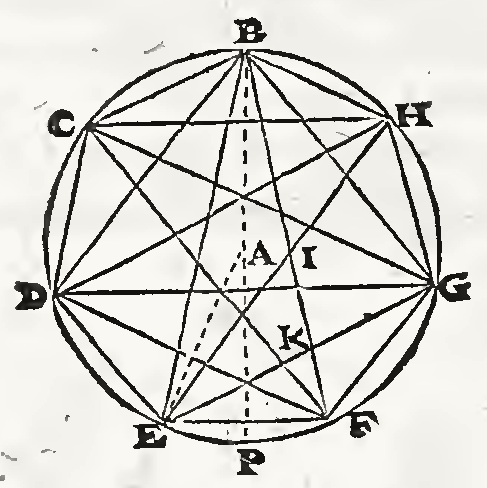

Proposition XLV: Non-Constructibility of the Regular Heptagon¶
Proposition XLV. The Heptagon (:g:`HEPT`), and all figures derived from it that have a number of sides being one of the Primes (so called), and their stars, and indeed all classes derived from them, lack a Geometrical description outside the circle; and in the circle, even though the quantity of their sides is necessary, it is nevertheless equally necessary that it remain unknown.
A great matter is here at stake; for by this effect it has come about that the Heptagon, and the other figures of this kind, were not employed by God for the adornment of the World, as indeed the knowable figures explained above were employed.


Let the Heptagon therefore be B C D E F G H, and let all the angles be connected with all, and let A be the center of the circle cHEPT, and \(BAP\) the Diameter, and let A be connected with E.
First, then, such figures obtain none of the improper demonstration spoken of above; for their number of sides and angles is one of the Primes: and no pair of the preceding figures divides the whole circle into parts numerable by any Prime Number, but rather they obtain a Number that is a Multiple of the Numbers of both figures.
Nor indeed do figures of this kind have a proper demonstration from the number of angles; because whatever is elicited from this is vague and manifold and by no means determined.
For let the Heptagon be cut into its five triangles: two extreme Obtuse-angled isosceles triangles \(BDC\) and \(BGH\), one innermost Acute-angled isosceles triangle BEF, and two intermediate Scalene triangles \(BED\) and \(BFG\). Since therefore the circumference upon which the legs of an angle stand, made at the opposite part of the circumference, measures out to the angle its own quantity, the angle \(BEF\) stands upon three parts of the circumference, \(BH\), \(HG\), \(GF\); the angle \(BFE\) likewise upon three, \(BC\), \(CD\), \(DE\); while \(EBF\) stands upon the single part EF. Therefore BEF is such a triangle as has each angle at the base triple that which is at the vertex. In the same way the Scalene triangle \(BED\) is proved to have its angles
f. 0051 · p. 33in a continued double proportion; for the simple is angle \(B\), the double is \(E\), and the quadruple is \(D\), that is, the double of \(E\).
Now if this figure has its certain description outside the circle, no less than the pentagon had above, it is necessary (as Campanus, Girolamo Cardano, and Candalla Flussas already admonished long ago) before all things that such triangles can be given, just as before the Pentagon there was given a triangle each of whose angles at the base was double the angle at the vertex. Now in that Pentagonal Triangle there was given to us a certain proportion of sides from the angles; in this Heptagonal triangle no certain proportion is given. For let \(I\) and \(K\) be the marks at which \(BF\) is cut by \(EH\) and \(EG\), which trisect the angle \(BEF\). Therefore in \(FEI\), since the angle \(FEI\) is bisected, as \(FE\) is to \(EI\) in it, so is \(FK\) to \(KI\). But \(EF\) is equal to the whole \(FI\). For \(FEI\) is \(4\) seventh parts of one right angle, of which \(EFI\) is \(6\) sevenths; therefore \(EIF\) is also \(4\) sevenths. Therefore the legs \(FE\) and \(FI\), opposite equal angles, are equal. And for the same cause \(EI\) and \(IB\) are also equal; wherefore also as \(FI\) is to \(IB\), so is \(FK\) to \(KI\). Further, in \(KEB\), because the angle \(KEB\) is bisected by \(EIH\), as \(KE\) is to \(EB\), so is \(KI\) to \(IB\). Now \(KE\) and \(FE\) are equal, because \(KEF\) is isosceles and similar to \(EBF\); and \(EF\) was equal to \(IF\), and \(EB\) is equal to \(FB\); wherefore also as \(IF\) is to \(FB\), so is \(KI\) to \(IB\). Therefore in the same \(BF\), the chord of three sevenths of the circle, two proportions of three parts have been found: first, as the mean \(KI\) is to the least \(KF\), so is the greatest \(IB\) to \(IF\) compounded of both the lesser, that is, to \(FE\), the side of the heptagon; again, as the greatest \(IB\) is to the mean \(IK\), so is the whole \(BF\) to \(FI\) compounded of the two least. This proportion indeed bears the outward show of a necessary determination to one certain proportion of \(EF\) to \(FB\); and it imposed upon Cardano, who, when he had noticed something of this kind in the sides of the Scalene triangle \(BED\), which he called the Reflex Proportion, boasted in vain of having found the side of the heptagon.
For no certain quantity of \(EF\) or \(IF\) follows, because that which we think we obtain anew in the second proportion coincides with the first. For whenever there are 4 Proportionals in which the first two equal the third, it also happens that just as the first is to the third, and the second to the fourth, so too is the third to the line compounded of the third and fourth, which compounded line becomes fifth in number. Now of these Cases there are infinitely many, both in commensurable terms and in incommensurable. And in particular, the cases of commensurable terms are as many as the superparticular proportions, namely as many as the square odd Numbers.
Proportion |
BF |
BI |
IK |
KF |
|---|---|---|---|---|
Superparticular |
9 |
6 |
2 |
1 |
or |
25 |
15 |
6 |
4 |
or |
49 |
28 |
12 |
9 |
or |
81 |
45 |
20 |
16 |
or |
121 |
66 |
30 |
25 |
Superpartient |
49 |
35 |
10 |
4 |
or |
64 |
40 |
15 |
9 |

For as \(15\) is to \(9\), so is \(40\) to \(24\), compounded of \(15\) and \(9\). And as \(40\) is to \(15\), so is \(64\) (consisting of \(40\), \(15\), and \(9\)) to \(24\), compounded of \(15\) and \(9\).
Behold a common property of many proportions, which indeed necessarily follows a heptagon already constructed, yet from which alone being given, the heptagonal triangle cannot be built. The reason why in the Pentagon a certain proportion of the side depends on the angles even outside the circle, whereas in the Heptagon and the rest of such figures it does not, is easily clear from what has been said.
In the Pentagonal triangle \(BFK\), by bisecting the angle \(BKF\), one comes immediately to two isosceles triangles \(BKT\) and \(KTF\) as its elements, and from their equal angles \(BFK\) and \(BKT\) follows the equality of the sides \(BK\), \(KT\), \(TF\); whereas in the Heptagonal triangle, by trisecting the angle, three elements of the triangle are made, two isosceles triangles \(BEI\) and \(KEF\), and one scalene \(IEK\); nor does a proportion of sides follow a proportion of angles in it, as is known in Geometry. Since therefore the angles of this figure teach nothing further outside the circle, the required triangle is not constructed outside the circle.
This figure is therefore not inscribable in a circle through anything prior in knowledge or description, but only through the inscription itself (of whatever sort) is that vague proportion forced into the straits of a single case, and thus the principle is begged: for in order that that may be found by which the inscription is perfected, we are commanded to employ the inscription itself, as though it were already possible beforehand.
Therefore the proportion of the Side \(EF\) to the side of the star \(FB\) lies hidden—lies hidden, I say, in quantitative matter—so that by the material cause of the principle of quantities, which is indeterminate magnitude, it is indeed possible to constitute the side of the heptagon in its just proportion to the diameter of the circle: since something certainly greater than the side of the heptagon, and something less, is given in the Circle itself—and further, as division proceeds to infinity, something greater than the side \(EF\) or something less than it can always be given—yet by the cause of that which is formal in quantities, it is simply impossible, because the figure of the heptagon and of like figures wholly lacks all means by which any certain proportion of the side might be demonstrated or found, and thus wholly lacks a knowable formation or determination.
Since this is so, neither can a figure of 14 angles be inscribed in the circle whose semidiameter is \(AP\) with side \(EP\), nor can two contiguous sides of it be subtended by one straight line \(EF\), which is the side of the Heptagon in that circle; nor will this side be able to be compared with the diameter, since by its own Nature it is of an unknown comparison to the Diameter.
Therefore no Regular Heptagon has ever been constructed by anyone knowingly and willingly, and acting from purpose; nor can it be constructed from purpose: though it might well be constructed by chance, and yet it is necessary that it remain unknown whether it has been constructed or not.
Someone might here object to me the Analytic doctrine, named Algebra from the Arab Geber, and by the Italian word Cossa; for in it the sides of Polygons of every kind seem able to be determined.
f. 0053 · p. 35For example, in the Heptagon, Jost Bürgi (Justus Byrgius), Mechanician to the Emperor and to the Landgrave of Hesse—who has devised many most ingenious and unexpected things in this kind—proceeds thus. First, he assigns the number \(2\) to the diameter \(BP\) of the circle, so that \(AB\) may be the total unity, which being divided into parts by an infinite section, the length of the side \(BC\) may be enumerated through them. Next, he assumes the proportion of \(AB\) to \(BC\) to be known, though that very proportion is what is finally sought.
In this proportion he feigns a continuity, so that as \(AB\) (\(1\)) is to \(BC\) (\(1R\)), so is \(1R\) to \(z\), and \(1z\) to \(c\), and \(1c\) to \(zz\), and \(1zz\) to \(sR\), and so on perpetually—which we shall more conveniently denote by apices thus: \(1\), \(1j\), \(1ij\), \(1iij\), \(1iiij\), \(1v\), \(1vj\), \(1vij\), &c.
These things being thus laid down, the quadrangle \(BEDC\) is considered first.
Since therefore it has been demonstrated by Ptolemy, Copernicus, Regiomontanus, Pitiscus, and the rest who have written on the doctrine of sines, that in any quadrangle of a circle, the single rectangle of the Diagonals \(CE\) and \(DB\) equals the two rectangles of opposite sides joined together—namely, that under \(DC\) and \(EB\), and that under \(CB\) and \(DE\)—and again, since it is certain from Geometry that \(CO\), half of the chord \(CH\), and \(OB\), the sagitta, with their squares joined together, equal the square of the side \(CB\):
Let \(BP\) therefore be \(2\), and \(CB\) be \(1j\), whose square is \(1ij\); divide this by \(BP\), and \(BO\) will come forth as \(1ij\) divided by \(2\), whose square is \(1iiij\) divided by \(4\); subtract this from the square of \(CB\), \(1ij\), and there remains \(4ij - 1iiij\) divided by \(4\), the square of \(CO\). Now since \(CH\) is double \(CO\), the square of \(CH\) will be \(16ij - 4iiij\) divided by \(4\), that is, \(4ij - 1iiij\).
Since therefore the square of \(CH\) or \(BD\) is had—that is, the rectangle under \(BD\) and \(CE\)—multiply \(CB\) by \(DE\), so that the rectangle under them is \(1ij\); subtract this from the rectangle under \(BD\) and \(CE\), \(4ij - 1iiij\), and there remains the rectangle under \(CD\) and \(BE\), \(3ij - 1iiij\); divide this by \(1j\), namely by \(CD\), and \(BE\) will come forth as \(3j - 1iij\).
We proceed further to the Quadrangle \(DBHE\). And because \(BE\) is \(3j - 1iij\), the rectangle under \(BE\) and \(DH\)—that is, the square of \(BE\)—will be \(9ij - 6iiij + 1vj\); subtract the rectangle under \(BH\) and \(DE\), \(1ij\), and there will remain the rectangle under \(BD\) and \(EH\), \(8ij - 6iiij + 1vj\). Divide this by \(EH\), \(3j - 1iij\), and \(BD\) will come forth as \(8ij - 6iiij + 1vj\) divided by \(3j - 1iij\): its square is \(64iiij - 96vj + 52viij - 12x + 1xij\) divided by \(9ij - 6iiij + 1vj\), which previously was \(4ij - 1iiij\); multiply the denominator of the former into this, and there will be equated
\(36iiij - 33vj + 10viij - 1x\) with \(64iiij - 96vj + 52viij - 12x + 1xij\). Therefore also \(63vj + 11x\) is equated with \(28iiij + 42viij + 1xij\). Here the equation yields the quantity of the Heptagonal side.
Or we proceed further to \(DB\) and \(EG\). For the square of \(DG\) and \(EB\) is \(9ij - 6iiij + 1vj\). But the square of \(DB\) and \(EG\) is \(4ij - 1iiij\); subtract this from that, and the rectangle under \(DE\) and \(BG\) will be \(5ij - 5iiij + 1vj\); divide this by \(DE\), \(1j\), and \(BG\) will be \(5j - 5iij + 1v\), whose square is \(25ij - 50iiij + 35vj - 10viij + 1x\), which previously was \(4ij - 1iiij\). Therefore \(49iiij + 10viij\) is equated with \(21ij + 35vj + 1x\). Therefore also \(49ij + 10vj\) is equated with \(21 + 35iiij + 1viij\).
Here again the equation yields the quantity of the Heptagonal side; but Bürgi turns his eyes away from the wholeness of the circle, and considers it merely as an arc to be divided into \(7\). Since therefore the chord of \(2\) parts is had by this cossic process, he now seeks the chord of \(4\) parts, and finds (by the same method as above) that it is the Root of \(16ij - 20iiij + 8vj - 1viij\). And now he uses this
f. 0054 · p. 36as the Diagonal in a new quadrilateral whose sides are the chords of three parts, and therefore their Rectangle is \(9ij - 6iiij + 1vj\), which being subtracted from the Rectangle \(16ij - 20iiij + 8vj - 1viij\), leaves the rectangle of the remaining sides as \(7ij - 14iiij + 7vj - 1viij\). This chord he uses, comparing it either with the number by which the chord of a certain arc to be septisected is stated, or with the figure of nothing, if the whole circle, as here, is to be septisected: and then to that number, or to the figure of nothing, these quantities are equal in value: \(7j - 14iij + 7v - 1vij\) or \(7 - 14ij + 7iiij - 1vj\).
There comes forth to him from the equation (which he aids mechanically) not one value of the root, but in the Pentagon two, in the Heptagon three, in the Nonagon four, and so consequently: for one value is \(BC\), another \(BD\), the third \(BE\).